Let's look at a different sort of application for state diagrams. Suppose that we're helping build IBM's new kitchen assistant. It uses voice recognition to recognize commands such as:
cook, cup, cut, dice, slice
To keep this simple, we'll use the written forms of these words for our class example. However, a real speech recognizer would use the phonetic versions. For example, "get" would be replaced by [g eh t]. A real speech recognizer would also need to represent different ways that a word might be pronounced. So our pronuncing dictionary might supply three pronunciations for "get":
Going back to our written forms, let's build a state diagram that represents exactly our set of five words. So all five words, and no other words. This sort of state diagram is called a "phone lattice". We'll first build this by simply taking the five words and joining them at a start state:
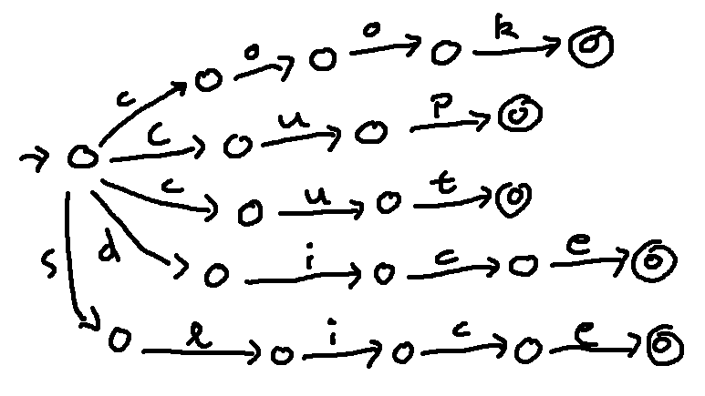
Each edge in the diagram represents the action of reading one character. Notice that we have only one start state but five end states.
The state diagram above is easy to construct but somewhat inefficient. It has more states than required. This isn't a huge problem with an example this small. It's a more serious issue with a full dictionary that might contain hundreds of thousands of words.
A second issue is that this lattice is "non-determinstic." From the start state, there are three places we could go when we read the letter "c". A computer program can still use this kind of phone lattice to process input text, but it requires keeping track of a set of states (not just a single state) at each input position.
So let's try to improve our phone lattice to get ride of the non-determinism and reduce the number of states. We can merge the start of words with the same initial characters.
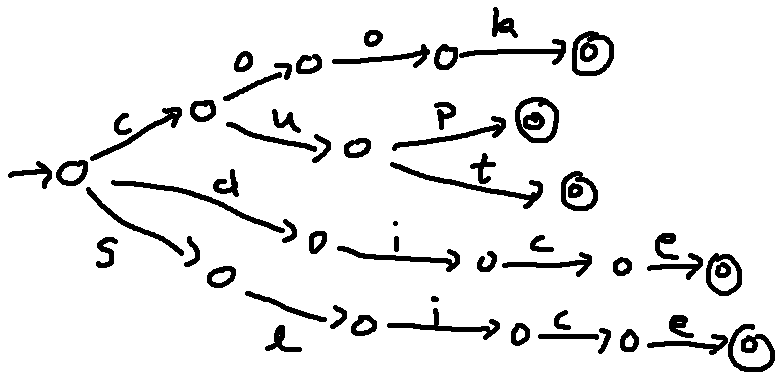
We can also merge the final parts of words with a common ending.
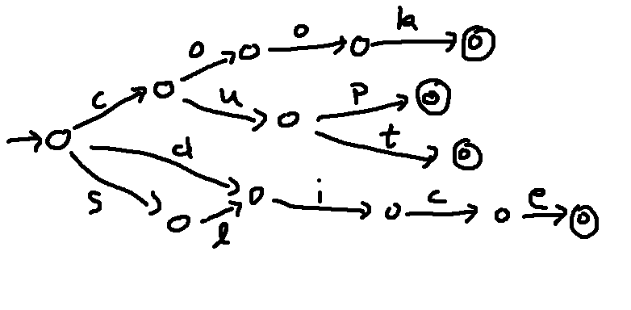
Finally, we can merge all the final states.
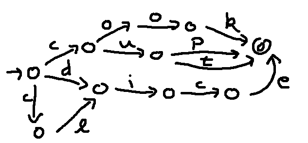
This sort of optimization is frequently done by a computer program, especially for larger lattices. For example, the utility "grep" found on linux and Mac computers allows users to specify a search pattern using a format that's easy for humans. This is automatically optimized before the search is actually run.
Suppose that we'd like to extend our set of words to reflect the fact that we can add -s to any of them. Here's an extended phone lattice. Notice that we have a transition from one end state into another end state, because we can either stop at the shorter word or continue with the -s.
cook, cup, cut, dice, slice
cooks, cups, cuts, dices, slices
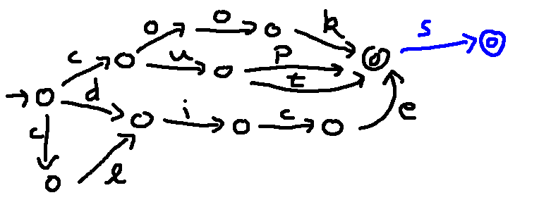
Suppose we add the word "six" and its plural "sixes". We might be tempted to do something like this:
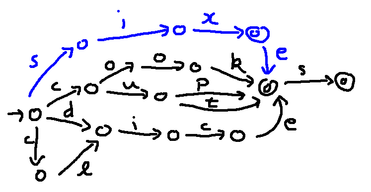
But notice that this also allows the word "sixe". So we need to create a pathway that stays separate for longer, like this:
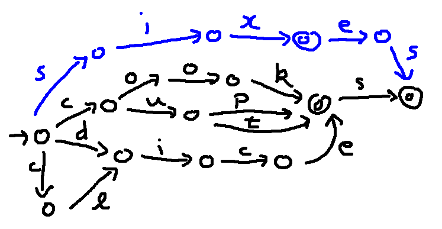
We can also create phone lattices with loops, to represent certain infinite classes of strings. For example, the word "ooh" can be extended to "oooh" or "ooooooh" or potentially even a longer sequence of o's. We could represent this set of strings like this:
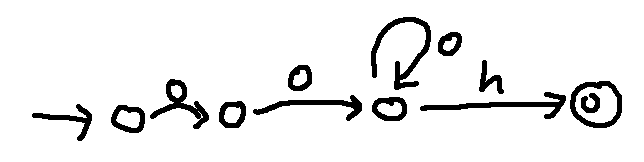
This variant produces a similar set of strings, but also including "oh".
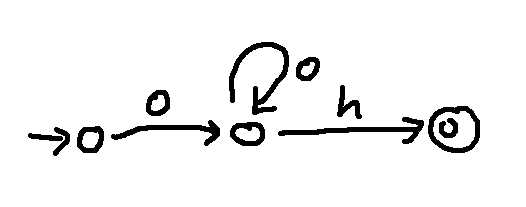
This phone lattice allows any string consisting of an h followed by an even number of m's.
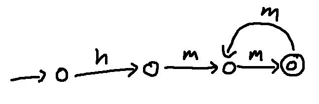
And this represents a sequence of one or more words from our original set of five cooking terms, separated by a space ⎵.
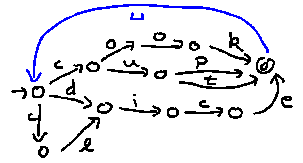